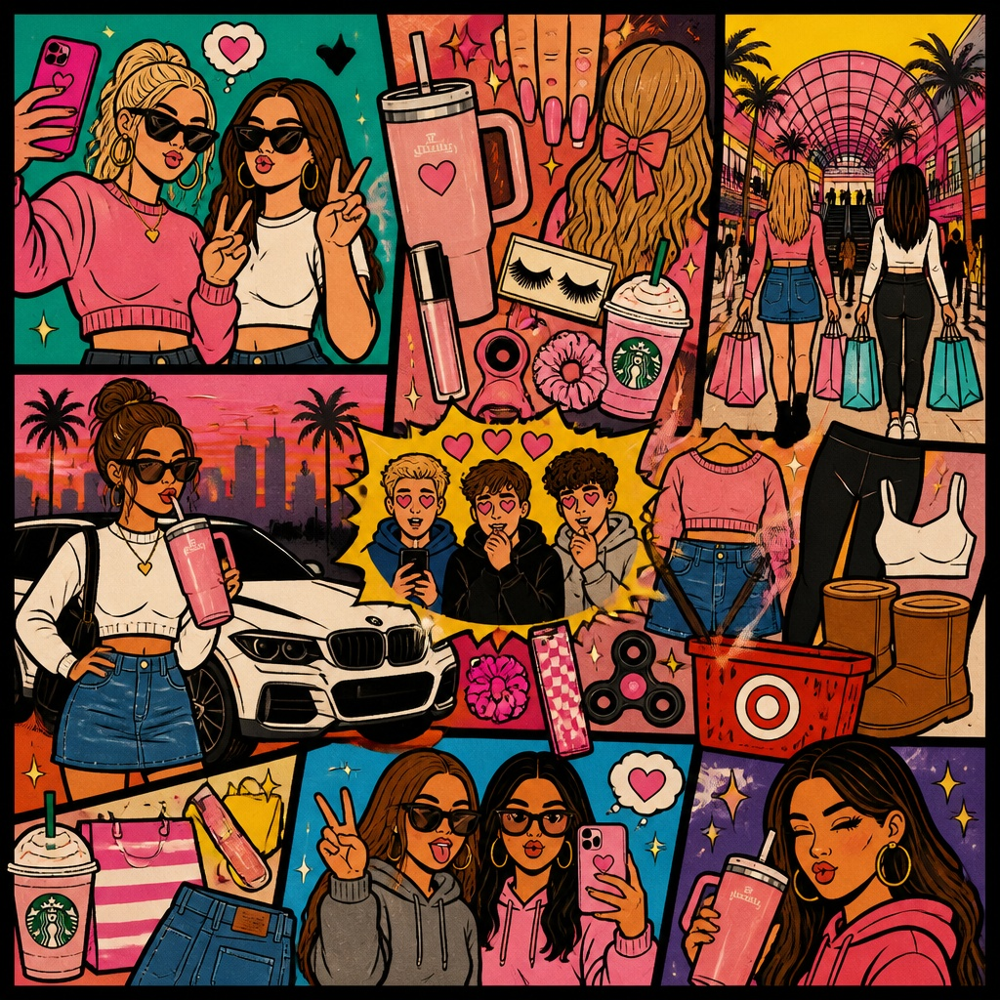

▶So CuteElectronicElectronicFemale vocals, upbeat, electronic pop, auto tune, parody, fastOpen audio for So Cute
▶Behind The GlassBossa NovaBossa NovaBossa nova with piano and acoustix guitarOpen audio for Behind The Glass
▶Golden age bluesJazzJazzjazz, soul, lofi, classic, shanghai jazz, female vocals, lo-fi, vocalOpen audio for Golden age blues
▶EverythingFunkFunkViolin intro , funk, male vocals, beat, ethereal, Neo soul, urban funkOpen audio for Everything
▶Drifting SlowBossa NovaBossa Novaold school, bossa nova, melodic, acousticOpen audio for Drifting Slow
▶凌晨通话PopPopmandopop emotional cinematic ballad inspired by Mandopop, Ballad, Pop Cantopop, Mandopop and Mandopop, Indie Pop, Pop Rock piano driven pop with ambient guitar and soft strings sentimental storytelling vocal nostalgic modern chinese pop ballad bpm 78Open audio for 凌晨通话
▶去吧，去闯PopPopWarm healing Chinese Mandopop ballad, deep emotional with light rock elements, middle-aged mature male and female duet, mature parental voices aged around 50-70, mother sings gentle tender lead parts with warm mature soft female vocals, slightly aged timbre, wise and tender tone, father provides deep low steady supportive harmonies, rich mature male vocals, slightly weathered gravelly low register, starts with piano and lush strings opening, chorus builds gradually with drums and electric guitar layers, ends fading back to pure acoustic gentle close, heartfelt true emotion without over-dramatizing, subtle restrained Chinese-style parental love, proud yet tender unspoken encouragement, strong Taiwanese accent in vocals, emotional, sincere, warm parental perspective, builds to uplifting hopeful ending, soft whispered intimate outro like a gentle murmur calling home, nostalgic yet empowering family love song, seasoned experienced voices, no youthful bright toneOpen audio for 去吧，去闯
▶舍不得JazzJazzEastern New Folk, Zen Chinese Style, Tempo: 85 Bpm, 4/4 Time Signature, Key: C MajorOpen audio for 舍不得
▶小镇炉火GuFengGuFengsoft strings, mandarin pop, warm and nostalgic tone. incorporate delicate guzheng plucking, male vocals, traditional chinese style with guzheng, and a heartfelt vocal performance to evoke a sense of time and familial love.Open audio for 小镇炉火